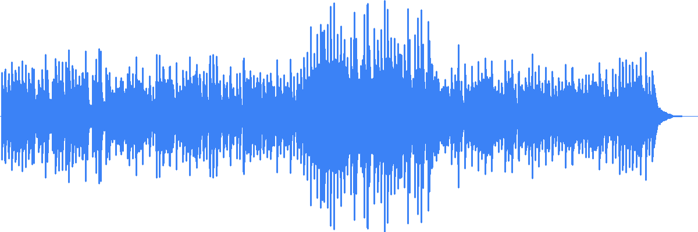

📌 Proyecto: Generación y visualización de waveform de archivos MP3
🛠️ Tecnologías: Python (pydub, Pillow), HTML5, JavaScript
📝 Descripción: Esta aplicación muestra la forma de onda de un archivo de audio generada con Python
